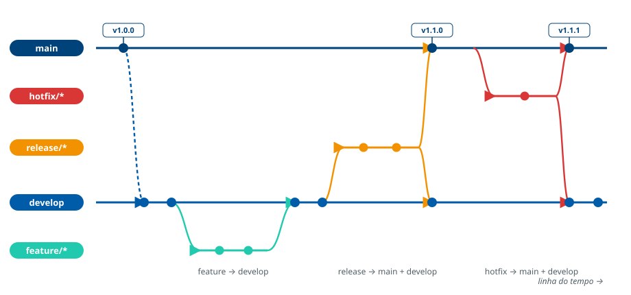

O modelo de flow adotado deve ser aderente ao GitFlow
O modelo de fluxo de trabalho adotado pela equipe de desenvolvimento deve
ser aderente ao modelo de mercado GitFlow.
Os repositórios devem manter as branches develop e
main presentes, protegidas e atualizadas.
O que a diretriz exige
O fluxo de trabalho deve estar alinhado a um padrão consolidado de mercado. Independentemente de adaptações, os requisitos a seguir são de cumprimento obrigatório:
- O repositório deve adotar GitFlow como modelo de fluxo.
- As branches
developemaindevem estar presentes e protegidas. - As branches principais devem ser mantidas atualizadas, com integração contínua de código.
- O modelo adotado deve estar em conformidade com a governança técnica institucional.
O modelo GitFlow
O GitFlow organiza o repositório em duas branches permanentes e três famílias de branches temporárias. Cada família tem origem, destino e tempo de vida definidos.

main por tag SemVer, e toda integração
em main retorna a develop por merge back.| Branch | Permanência | Origem | Destino |
|---|---|---|---|
main | permanente | — | — |
develop | permanente | main | — |
feature/* | temporária | develop | develop |
release/* | temporária | develop | main e develop |
hotfix/* | temporária | main | main e develop |
As diretrizes 3, 4 e 5 detalham mecânicas do GitFlow (branches de
release/hotfix e merge back), e a
Diretriz 11 fixa a nomenclatura de cada família.
As referências metodológicas sobre este assunto devem ser incluídas aqui. (espaço reservado para os links institucionais.)